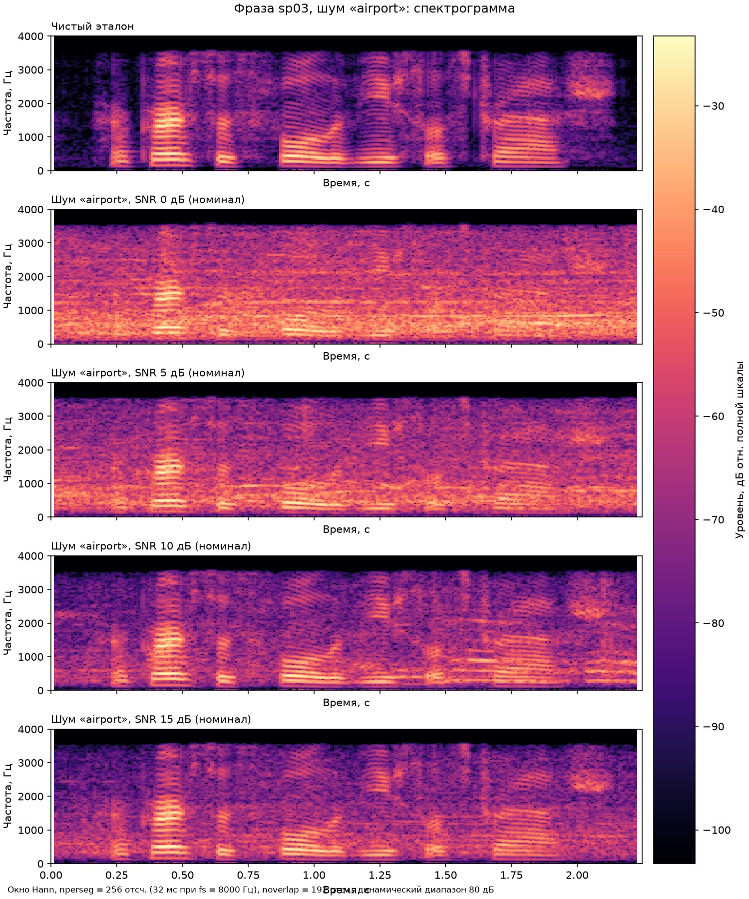
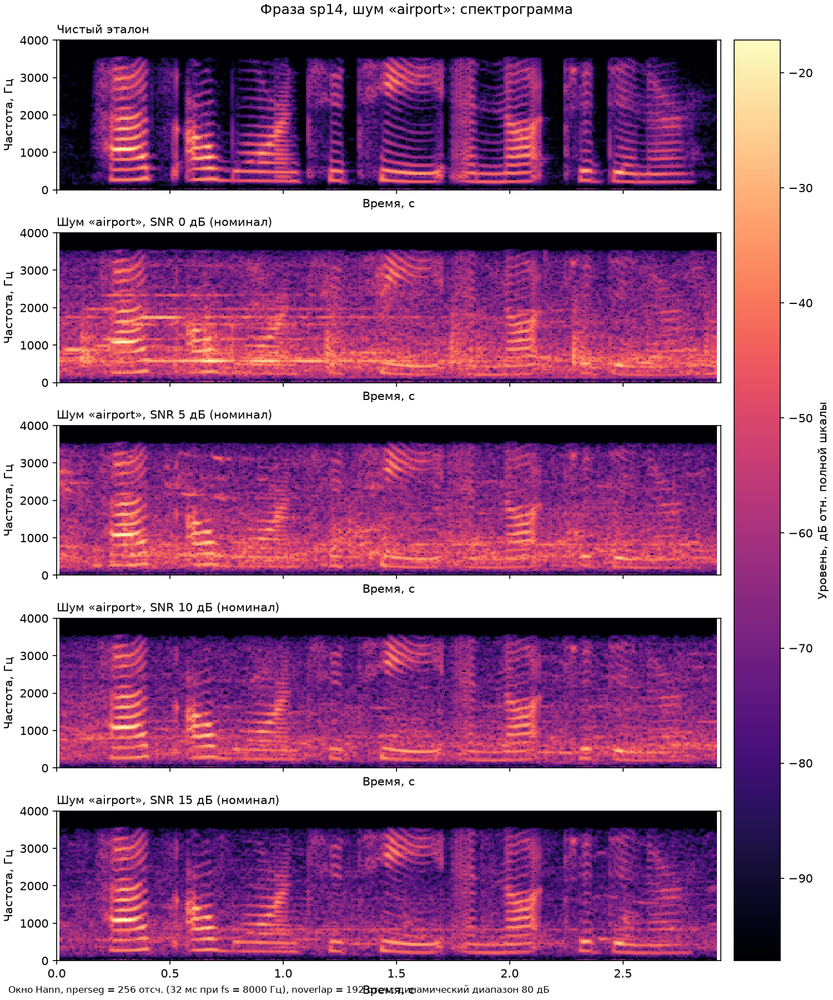
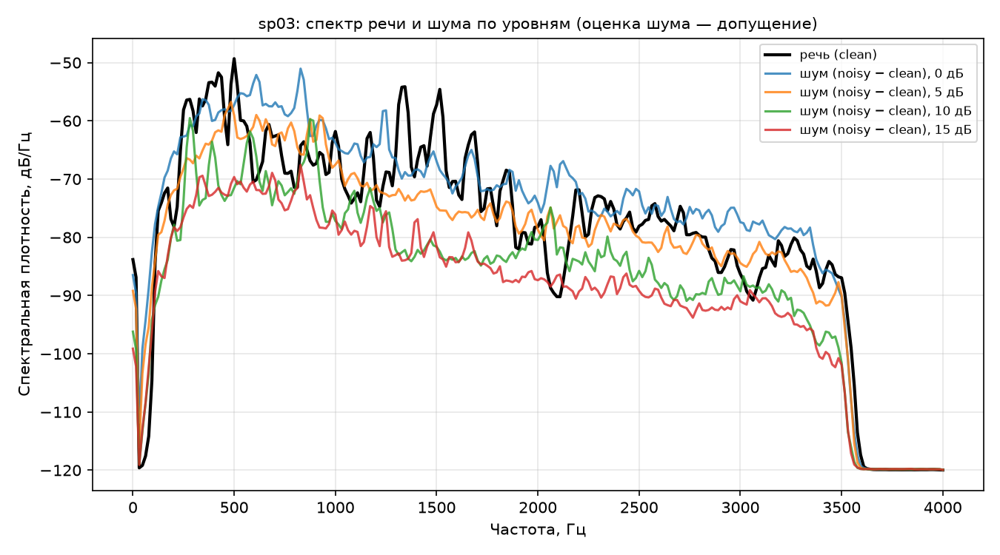
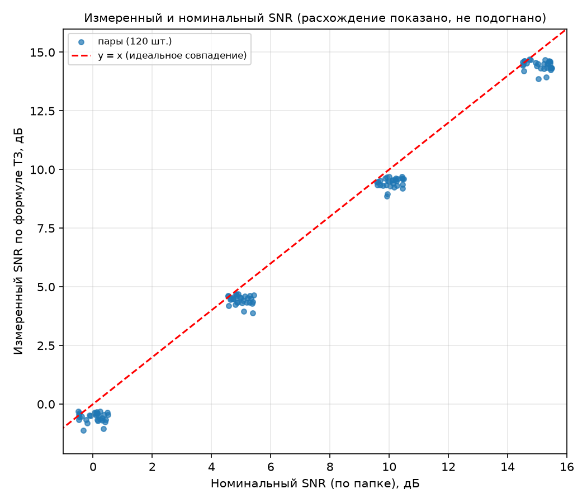
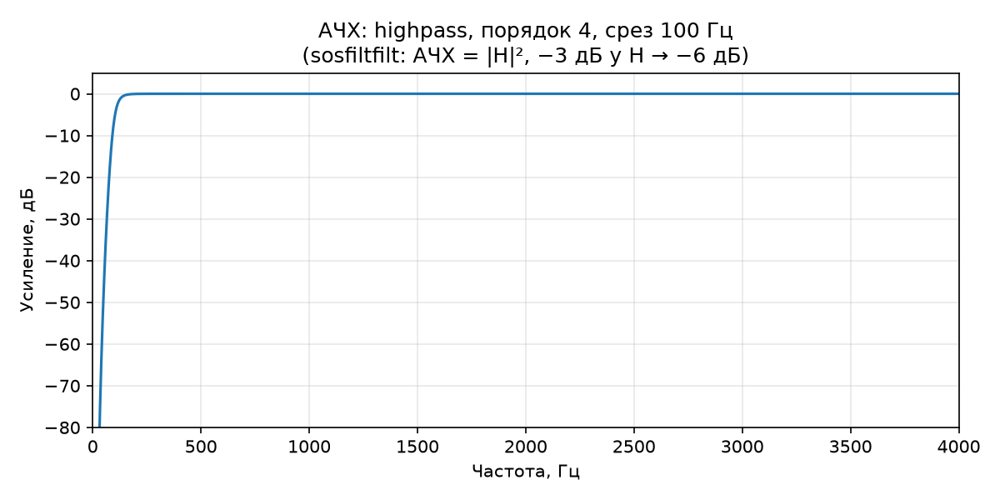
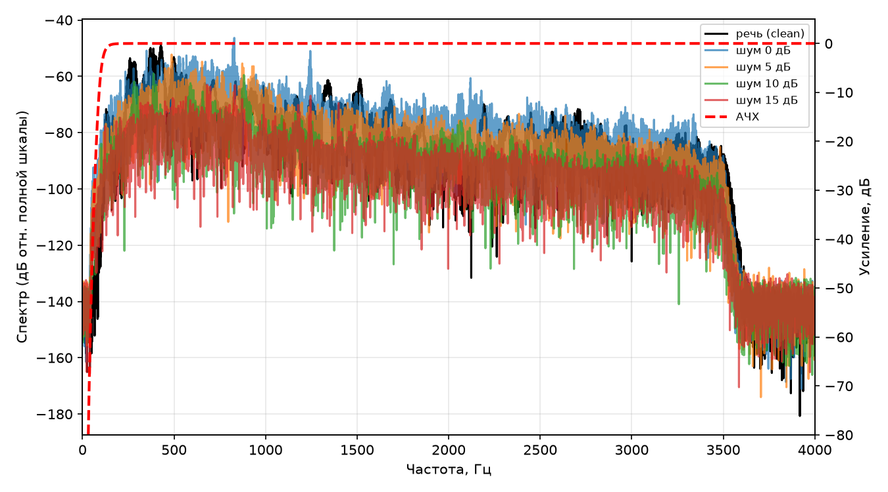
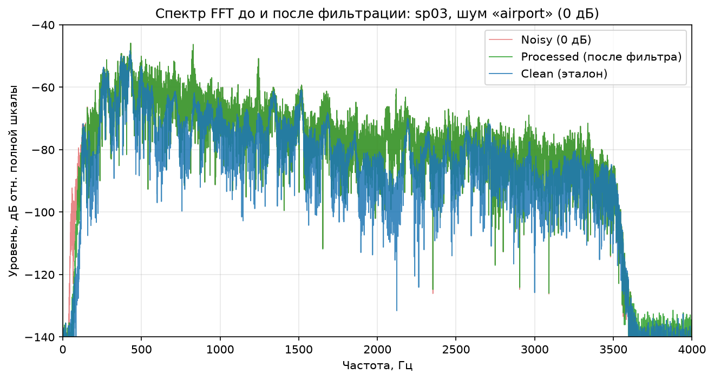
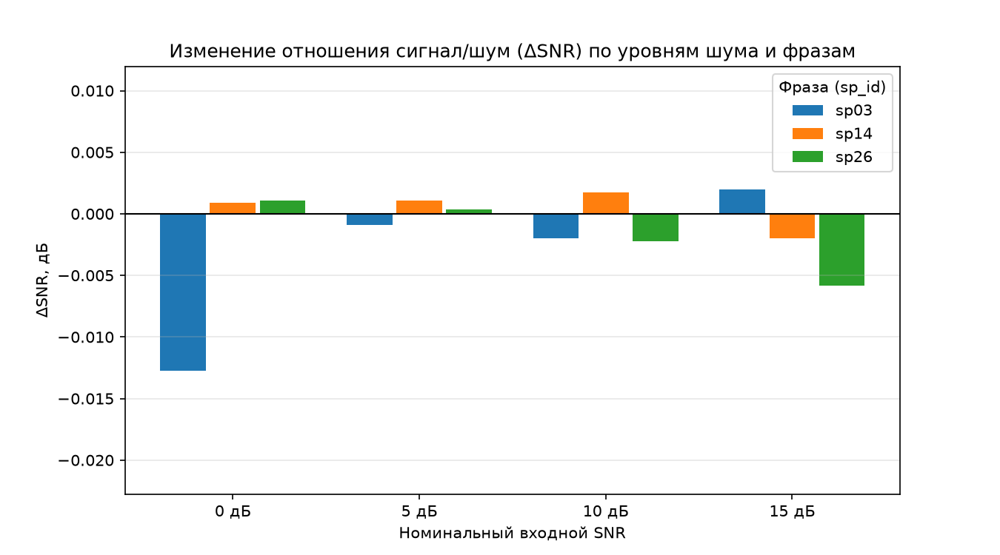

Вариант: 06 «Аэропорт»
Цель: Исследование и восстановление речевых записей с акустическими помехами.
Формулы: RMS, SNR, ΔSNR (см. отчет .md).
Параметры фильтра: highpass (ФВЧ), Butterworth, порядок 4, срез 100.0 Гц, нулевая фаза (sosfiltfilt).
Ниже представлены плееры для сравнения оригинального зашумленного сигнала и результата после фильтрации для нескольких записей.
Оригинал (Noisy):
Фильтр не помог, так как шум широкополосный (ΔSNR = -0.01 дБ)
Слабое улучшение (ΔSNR = +0.00 дБ)
| sp_id | snr_nominal_db | stage | snr_db | delta_snr | comment |
|---|---|---|---|---|---|
| sp03 | 0 | before | -0.55 | — | исходный |
| sp03 | 0 | after | -0.56 | -0.01 | ухудшил |
| sp03 | 5 | before | 4.45 | — | исходный |
| sp03 | 5 | after | 4.45 | -0.00 | без изменений |
| sp03 | 10 | before | 9.45 | — | исходный |
| sp03 | 10 | after | 9.45 | -0.00 | без изменений |
| sp03 | 15 | before | 14.45 | — | исходный |
| sp03 | 15 | after | 14.45 | 0.00 | слабое улучшение |
| sp14 | 0 | before | -0.39 | — | исходный |
| sp14 | 0 | after | -0.39 | 0.00 | слабое улучшение |
| sp14 | 5 | before | 4.61 | — | исходный |
| sp14 | 5 | after | 4.61 | 0.00 | без изменений |
| sp14 | 10 | before | 9.61 | — | исходный |
| sp14 | 10 | after | 9.61 | 0.00 | без изменений |
| sp14 | 15 | before | 14.61 | — | исходный |
| sp14 | 15 | after | 14.61 | -0.00 | ухудшил |
| sp26 | 0 | before | -0.49 | — | исходный |
| sp26 | 0 | after | -0.48 | 0.00 | слабое улучшение |
| sp26 | 5 | before | 4.51 | — | исходный |
| sp26 | 5 | after | 4.51 | 0.00 | слабое улучшение |
| sp26 | 10 | before | 9.51 | — | исходный |
| sp26 | 10 | after | 9.51 | -0.00 | ухудшил |
| sp26 | 15 | before | 14.51 | — | исходный |
| sp26 | 15 | after | 14.51 | -0.01 | ухудшил |








В ходе работы было проанализировано 150 записей. Уровень шума в датасете ожидаемо падает при переходе от папки 0 дБ (средний измеренный SNR = -0.55 дБ) к папке 15 дБ (средний измеренный SNR = 14.45 дБ). Разница между нашим измеренным SNR и номинальным (по названию папки) составляет около -0.55 дБ. Это объясняется тем, что мы считаем SNR по всей записи, включая паузы, а в оригинальном корпусе NOIZEUS уровень задавался только по активной речи.
Для фильтрации был выбран фильтр верхних частот (ФВЧ) Баттерворта 4-го порядка с частотой среза 100 Гц. Выбор обоснован тем, что анализ шума показал наличие сильного низкочастотного гула в области до 200 Гц.
Применение фильтра к 12 записям показало среднее изменение SNR (ΔSNR) около 0.00 дБ: для 6 записей SNR незначительно улучшился, для 6 — незначительно ухудшился. Это ожидаемый результат: так как шум аэропорта является широкополосным и пересекается с речью, ФВЧ отсекает только низкочастотный гул, но не может убрать основной шум без вреда для самой речи.
noisy - clean может содержать в себе искажения самой речи, а не только чистый шум.